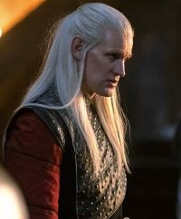

Daemon Targaryen
Casa-se com Rhaenyra após ajudá-la a encenar a morte de Laenor.
Conteúdo até a temporada 1, episódio 10.
Ver Mapa de Conexões →Temporada 1
Acompanhe os acontecimentos registrados até o episódio escolhido.
Episódio 01 — The Heirs of the Dragon
Irmão de Viserys e comandante da Patrulha da Cidade. Sua ambição e seus métodos provocam atritos na corte.
Episódio 02 — The Rogue Prince
Daemon toma um ovo de dragão e anuncia um casamento com Mysaria. Rhaenyra chega em Syrax e recupera o ovo sem combate.
Episódio 03 — Second of His Name
Vence a campanha dos Degraus ao lado de Corlys e Laenor, matando o Alimentador de Caranguejos.
Episódio 04 — King of the Narrow Sea
Daemon retorna com uma coroa conquistada nos Degraus e a entrega a Viserys. A reconciliação parece possível.
Episódio 05 — We Light the Way
Daemon encontra sua esposa Rhea Royce e provoca sua queda. Ao perceber que ela sobreviveu, aproxima-se com uma pedra.
Episódio 06 — The Princess and the Queen
Laena, casada com Daemon e mãe de Baela e Rhaena, enfrenta um parto sem saída. Escolhe morrer pelo fogo de Vhagar.
Episódio 07 — Driftmark
Casa-se com Rhaenyra após ajudá-la a encenar a morte de Laenor.
Episódio 08 — The Lord of the Tides
Muito debilitado, Viserys comparece ao salão para sustentar o direito de Lucerys. Daemon mata Vaemond após seus insultos a Rhaenyra e aos filhos.
Episódio 10 — The Black Queen
Rhaenys informa Rhaenyra sobre a morte de Viserys e a coroação de Aegon. Em meio à crise, Rhaenyra entra em trabalho de parto e perde a filha Visenya.
Personagens relacionados
- Viserys I TargaryenIrmãos
- MysariaCompanheiros
- Corlys VelaryonAliança nos Degraus
- Laena VelaryonCasados; Laena morre no ep. 6
- Rhaenyra TargaryenCasados
- Baela TargaryenPai e filha
- Rhaena TargaryenPai e filha